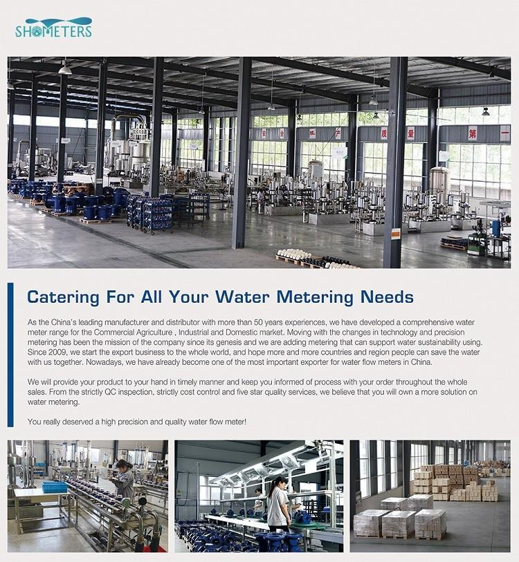
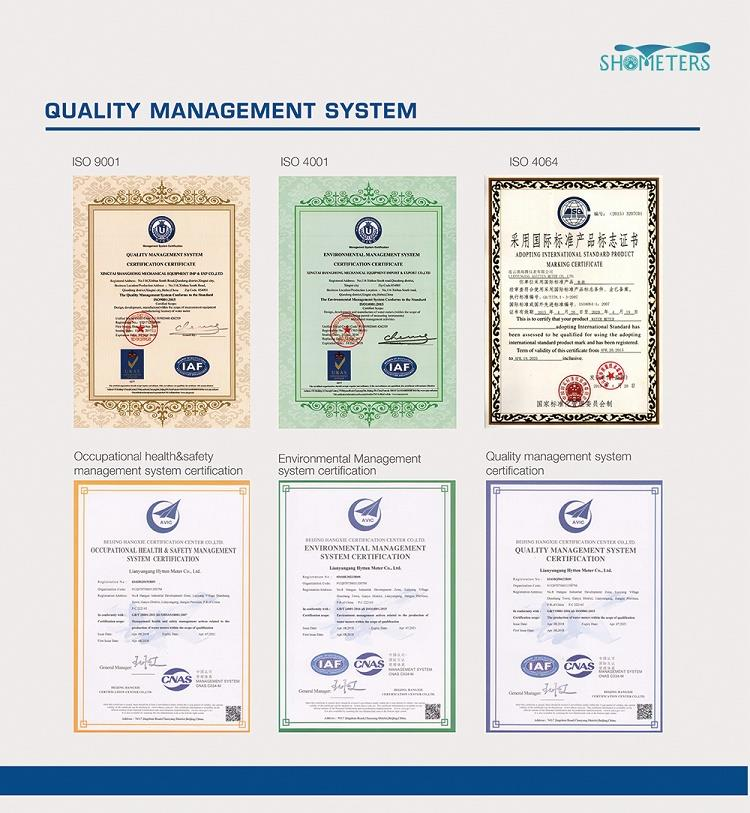

E-mail:
info@sh-meters.comCall Us:
+86 13131984716
LXLC(R)-50-300 (mm) removable element woltman cold (hot )water meter. Selected high quality materials for steady&reliable characteristic. Vacuum sealed register ensures the dial keep free from fog and Keep the reading clear in a long term service.
LXLC(R)-50-300 (mm) removable element woltman cold (hot )water meter. Selected high quality materials for steady&reliable characteristic. Vacuum sealed register ensures the dial keep free from fog and Keep the reading clear in a long term service. The technical parameters of this product are in accordance with the international ISO4064 standard.
The machanism shell is importing PPO from GE company in USA ensures the sercice life of water meter because it's not easy to deform. The installation of the counter adopts the humanized buckle design. This design is obtained by the national patent certificate, which is very convenient for installation and disassembly.
Applicable scenarios:
Industrial, household, sewage treatment plant, water supply plant, etc
Packaging: Carton box (accept customized )/ wooden case




 Remote Reading GPRS Smart Water Meter
Remote Reading GPRS Smart Water Meter Intelligent GPRS Valve Control Remote Water Meter
Intelligent GPRS Valve Control Remote Water Meter Pipe Pressure Test Ultrasonic Water Flow Meter
Pipe Pressure Test Ultrasonic Water Flow Meter Water Meter Brass Connectors
Water Meter Brass Connectors Bulk Prepaid Water Meter
Bulk Prepaid Water Meter